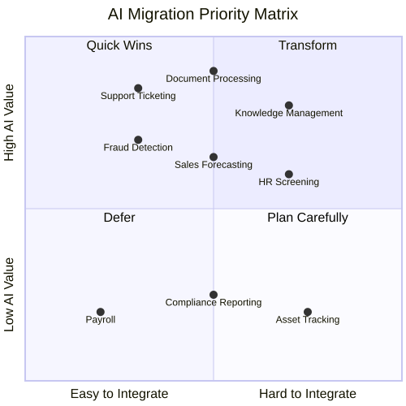

Migration Strategies — AI-Enabling Your Existing Systems
You Can’t Start from Scratch
Nobody gets to build an AI-native enterprise from a blank slate. You have legacy systems that were architected years ago under entirely different assumptions. You have technical debt that accumulated because shipping features always took priority over refactoring. You have organizational politics — teams that own systems and don’t want outsiders touching them, executives who already promised a roadmap that doesn’t mention AI, and a backlog of projects that were green-lit before AI became the top priority.
This is the reality that every enterprise architect faces, and it is important to name it honestly rather than pretend it away. The temptation is to sketch out a beautiful AI-native target architecture on a whiteboard, declare victory, and then wonder why nothing changed six months later. The truth is that migration is where the real work lives. Getting AI into production means threading it through the messy, imperfect systems that actually run your business today.
This chapter is about pragmatic strategies for introducing AI into your existing architecture without breaking everything in the process. We will walk through three distinct approaches, each suited to different levels of risk tolerance and organizational readiness, and then lay out a concrete playbook for sequencing them over time.
The Three Migration Approaches
When it comes to integrating AI into existing systems, there is no single right answer. The best approach depends on the system in question, the organization’s appetite for change, and how much value AI can realistically deliver in that context. That said, virtually every migration fits into one of three broad patterns, and understanding all three gives you the vocabulary to have productive conversations with stakeholders about what you are actually proposing and why.
Approach 1: AI Sidecar
The sidecar pattern is the gentlest way to bring AI into an existing environment. The core idea is to attach AI capabilities alongside an existing system without modifying that system at all. The AI component runs as a completely separate service — it reads data from the existing system’s database or APIs, performs its analysis or enrichment, stores its own results separately, and surfaces those results through its own interface. The original system remains untouched, blissfully unaware that anything has changed.
The advantages of this approach are significant, especially for organizations just getting started with AI. Because you are making zero changes to existing systems, the risk is as low as it gets. You can stand up a sidecar with a small team, often in a matter of weeks, and if the experiment does not work out, you simply turn it off. There is no rollback complexity because nothing was changed in the first place. This makes the sidecar pattern ideal for first AI projects where you need to prove value before the organization is willing to invest in deeper integration.
The trade-off, of course, is that the integration is limited. Users have to go to a separate interface to see the AI-generated insights, which means adoption depends on how compelling those insights are. You cannot inject AI intelligence directly into the workflows where people are already working, and you miss opportunities for real-time AI augmentation. The sidecar observes but does not participate.
A concrete example helps illustrate the pattern. Imagine building an AI-powered dashboard that reads support ticket data from your CRM and provides trend analysis, sentiment scores, and suggested responses — all without touching the CRM itself. The support team keeps working in the CRM exactly as they always have, but now a manager can open a separate dashboard to see which accounts are trending negatively, which categories of tickets are spiking, and what the AI recommends as a next step. If the dashboard proves valuable, it becomes the justification for deeper integration later.
Approach 2: AI Augmentation
Augmentation takes things a step further by weaving AI capabilities directly into existing system workflows. Rather than running alongside the system, the AI becomes part of the process — an additional step in a workflow, an API call that enriches data as it flows through, or an event-driven trigger that adds intelligence at exactly the right moment. The existing system is modified, but not replaced. It continues to do what it has always done, only now certain steps are smarter.

The primary advantage of augmentation is that AI appears naturally in existing workflows, which drives dramatically higher user adoption. People do not have to change how they work or learn a new tool — the AI just makes their existing tool smarter. When a claims adjuster submits a new claim and the system automatically classifies the urgency, extracts key entities, and pre-fills fields, the adjuster barely notices the AI. They just notice that their job got easier. That seamless experience is what makes augmentation so powerful.
The downside is that you are now modifying existing systems, which introduces all the usual risks of software change. You need integration testing to make sure the AI step does not break the workflow when it fails or returns unexpected results. You need to think about performance — adding an API call to an LLM in the middle of a real-time workflow adds latency that users will feel. And you need a team that has access to and familiarity with the existing system’s codebase, which can be a challenge if that system was built years ago by people who have since left the organization. This approach works best for systems that already have good API layers or plugin architectures that were designed for extensibility.
A practical example is adding an AI classification step into your claims processing workflow. After a claim is submitted, the AI service classifies its urgency, extracts key entities like policy numbers and incident descriptions, and pre-fills fields that an adjuster would otherwise have to complete manually. The existing workflow continues with enriched data, and the adjuster can override any AI decision if it does not look right. The workflow itself is the same — it just has a new, smarter step in the middle.
Approach 3: AI-Native Rebuild
The most ambitious approach is to rebuild a system from the ground up with AI as a core architectural component rather than an add-on. This is not about bolting AI onto something that was designed without it — it is about rethinking what the system should be when AI is a first-class citizen. The data architecture changes. The user experience changes. The entire interaction model changes because you are designing around what AI can do rather than trying to retrofit AI into patterns that were designed for purely deterministic software.
When done well, the results are extraordinary. An AI-native system delivers the best possible user experience because every interaction was designed with AI in mind. There are no awkward integration points or compromises forced by legacy architecture. The system can take full advantage of AI capabilities — conversational interfaces, proactive suggestions, adaptive workflows, and intelligent automation — because those capabilities were baked into the design from the beginning.
The cost is equally significant. A rebuild is the highest-risk, highest-cost, and longest-timeline option. You are building a new system from scratch, which means months of development before you deliver any value. You face all the risks of any major system replacement — data migration challenges, user retraining, parallel running, and the inevitable organizational disruption that comes with telling people their familiar tool is going away. For all of these reasons, a rebuild should only be considered for new greenfield applications or for systems that are already scheduled for replacement regardless of AI.
An example of where this makes sense is building a new AI-native customer service platform to replace a legacy ticketing system. The new platform is designed from the ground up around conversational AI, automated routing, knowledge base Q&A, and agent assist as core features. Every screen, every workflow, and every data model was designed with the assumption that AI is present and active. You could not achieve this by bolting features onto the old ticketing system — the gap between the old architecture and the new vision is too wide.
Choosing Your Migration Strategy
The table below summarizes the key differences between the three approaches across the dimensions that matter most when you are making the decision.
| Factor | Sidecar | Augmentation | Rebuild |
|---|---|---|---|
| Risk | Low | Medium | High |
| Time to value | 1-3 months | 3-6 months | 6-18 months |
| Business impact | Low-medium | Medium-high | High |
| System changes | None | Moderate | Complete |
| Best as | Proof of concept | Production enhancement | Strategic initiative |

The typical journey through these approaches follows a natural progression. You start with a sidecar to prove that AI can deliver value in your specific context and to build confidence across the organization. Once you have that proof point, you move to augmentation — integrating AI directly into workflows where it can have a more tangible impact on day-to-day work. And only after you have built the organizational muscle, the technical infrastructure, and the governance framework to support AI at scale do you consider a rebuild, and even then only where the business case is genuinely compelling. Trying to jump straight to a rebuild without having gone through the earlier stages is one of the most common and most expensive mistakes organizations make.
The AI Readiness Assessment
Before you choose a migration approach for any particular system, it is worth stepping back and honestly assessing whether that system — and the organization around it — is actually ready for what you are proposing. Enthusiasm for AI is not the same as readiness for AI, and the difference between the two is where projects go to die.
Technical Readiness
Technical readiness is about whether the system itself can support the kind of AI integration you have in mind. The questions below are not exhaustive, but they cover the issues that trip up most organizations. If you find yourself answering “no” to several of them, that does not mean you should give up — it means you should adjust your migration approach accordingly, or invest in fixing the underlying issues before you layer AI on top.
| Question | Impact |
|---|---|
| Does the system have APIs? | No APIs → Sidecar only (read from DB) |
| Is the data clean and accessible? | Bad data → fix data first, not AI |
| Is there a test environment? | No test env → can’t safely integrate AI |
| What’s the deployment frequency? | Monthly releases → augmentation is slow |
| Is the system vendor-managed (SaaS)? | SaaS → limited to vendor’s AI features or sidecar |
The single most important question on that list is whether the data is clean and accessible. You can work around missing APIs by using a sidecar. You can work around slow deployment cycles by being patient. But you cannot work around bad data. If your system is full of duplicate records, inconsistent formats, missing fields, and stale information, then any AI you build on top of it will produce unreliable results, and users will learn very quickly not to trust it. Fixing data quality is not glamorous work, but it is often the highest-leverage thing you can do to prepare for AI adoption.
Organizational Readiness
Technical readiness is only half the picture. Organizational readiness — the human side of the equation — is equally important and far more often overlooked. You can have the perfect technical foundation, but if the people and processes are not ready, the migration will stall.
| Question | Impact |
|---|---|
| Is the team open to AI? | Resistance → start with sidecar (least disruptive) |
| Is there executive sponsorship? | No sponsor → don’t start rebuild |
| Is there data science capability? | No DS team → use pre-built AI services |
| Is there a governance framework? | No governance → build it before deploying AI |
Pay special attention to that last question about governance. It is tempting to move fast and figure out governance later, but one rogue AI deployment that produces biased results or leaks sensitive data can set your entire AI program back by a year or more. Having even a lightweight governance framework — who approves AI deployments, how we evaluate them, what data they can access — gives the organization the confidence to move faster, not slower.
Migration Playbook
With the three approaches and the readiness assessment as context, let us walk through a concrete playbook for sequencing your AI migration over the course of a year. This is not a rigid prescription — every organization is different — but it provides a solid starting framework that you can adapt to your circumstances.
Step 1: Inventory and Prioritize
The first thing you need is a clear picture of where AI can deliver the most value with the least friction. Map your application portfolio onto a two-dimensional grid where one axis represents the potential AI value and the other represents how easy the system is to integrate with. The goal is to identify the upper-left quadrant — systems where the AI opportunity is high and the integration effort is low.

The systems in the upper-left quadrant are your starting point. These are the ones where you can demonstrate meaningful value quickly, which builds the organizational momentum you will need for the harder integrations later. Resist the temptation to start with the most technically interesting problem or the one that your most senior stakeholder cares about — start where you are most likely to succeed, because early successes compound.
Step 2: Quick Wins (Month 1-3)
In the first three months, your goal is to deploy two or three AI sidecars on high-value systems and get them in front of real users. Good candidates for early sidecars include an internal knowledge Q&A system built with RAG on your company documentation, a document classification and summarization service that helps teams process incoming materials faster, and a support ticket triage tool that automatically categorizes and prioritizes incoming requests.
These projects share a critical characteristic: they prove value without introducing risk. They do not modify existing systems. They do not require organizational change management. They simply provide new capabilities that people can choose to use or ignore. And when people start using them — when the support manager realizes she can see sentiment trends she never had visibility into before, or when the legal team discovers they can summarize a contract in seconds instead of minutes — those stories become the fuel for everything that follows.
Step 3: Strategic Integration (Month 3-9)
With a few successful sidecars under your belt and growing organizational confidence, the next phase is to augment two or three core workflows with embedded AI capabilities. This is where the impact starts to get serious. Think about AI-assisted data entry where the system automatically extracts and fills fields from uploaded documents, saving users minutes of manual work per transaction. Think about intelligent routing that classifies incoming requests and sends them to the right team automatically, reducing misroutes and response times. Think about predictive features like churn risk scoring or demand forecasting that give teams actionable intelligence they never had before.
Each of these integrations requires modifying existing systems, which means you will need buy-in from the teams that own those systems, adequate testing environments, and a rollback plan in case something goes wrong. This is also the phase where you start to discover the operational realities of running AI in production — model latency, error handling, monitoring, and cost management all become real concerns rather than theoretical ones.
Step 4: Platform Consolidation (Month 6-12)
Somewhere around the six-month mark, you will start to notice that your various AI projects are reinventing the same wheels. Every team is setting up their own model access, building their own prompt templates, and figuring out their own monitoring approach. This is the natural point to invest in shared AI infrastructure that serves the entire organization.
The core components of that shared infrastructure typically include an AI Gateway for centralized model access and cost management, a shared RAG knowledge base that multiple applications can query, common evaluation and monitoring tools so that every team does not have to build their own observability stack, and a prompt template library that captures institutional knowledge about what works. Building this shared infrastructure is not just about efficiency — it is about consistency. When every team is using the same gateway, the same evaluation framework, and the same governance controls, the organization can move faster with more confidence.
Step 5: AI-Native Where It Matters (Month 12+)
Only after you have built the organizational muscle, the technical infrastructure, and the track record of successful AI deployments should you consider a full AI-native rebuild. Even then, this should be limited to one or two systems where the business case is truly compelling — where the gap between what the current system can do and what an AI-native system could do is so large that the investment and disruption are clearly justified.
Most systems in your portfolio will never need a rebuild. A well-executed sidecar or augmentation is often sufficient to capture the vast majority of the AI value available. The rebuild option exists for those rare cases where the vision genuinely requires rethinking the entire system from the ground up, and where the organization is ready to commit the time, money, and attention that a rebuild demands.
Common Migration Mistakes
Having walked through the playbook, it is worth pausing to talk about the mistakes that derail AI migrations most frequently. These are patterns that repeat across industries and organization sizes, and being aware of them gives you a much better chance of avoiding them.
The first and most common mistake is starting with the hardest system. There is a natural temptation to tackle the most complex, most impactful system first — after all, that is where the biggest potential payoff lies. But the most complex system is also where you are most likely to fail, and an early failure can poison the organization’s attitude toward AI for years. Start where it is easy, build confidence and capability, and work your way up to the hard problems.
The second mistake is ignoring data readiness. This one is so important that it bears repeating: if the data is not clean, AI will not fix it. In fact, AI will amplify the problems in your data by confidently generating outputs based on garbage inputs. Before you invest in any AI integration, invest in understanding and improving the quality of the data that the AI will consume. This is not exciting work, but it is essential work.
The third mistake is building without governance. The speed advantage of moving fast without guardrails is an illusion. One rogue AI deployment that causes a PR incident — a biased hiring recommendation, a hallucinated financial figure, a data privacy breach — will set your AI program back further than any governance framework ever could. Establish the basics of AI governance before your first production deployment, not after your first incident.
The fourth mistake is over-investing in infrastructure before proving value. You do not need a Kubernetes cluster with eight GPUs for your first AI project. You do not need a custom model training pipeline. You do not need a feature store. What you need is an API key and a well-crafted prompt. Start with the simplest possible infrastructure — managed API calls to a hosted model — and add complexity only when you have proven that the value justifies the investment.
The fifth mistake, and perhaps the most consequential, is forgetting the humans. AI changes workflows and roles in ways that can feel threatening to the people affected. If you do not bring people along on the journey — explaining what is changing and why, involving them in the design of new workflows, and addressing their concerns honestly — they will resist. And resistance from the people who actually use the systems you are trying to improve is the single most effective way to kill an AI initiative.
Key Takeaways
- There are three fundamental approaches to AI migration — the Sidecar (low risk, low disruption), Augmentation (moderate risk, embedded in workflows), and AI-Native Rebuild (high risk, high reward) — and understanding all three gives you the vocabulary to choose the right approach for each system.
- The most reliable path is to start with sidecars to prove value and build organizational confidence, then move to augmentation for deeper integration, and only selectively pursue rebuilds where the business case is overwhelming.
- Before committing to any migration approach, assess both technical readiness (APIs, data quality, test environments) and organizational readiness (team openness, executive sponsorship, governance), because deficiencies in either area will derail even the most well-architected plan.
- Always begin with high-value, easy-to-integrate systems rather than tackling the hardest problem first, because early successes create the momentum and credibility you need for harder challenges later.
- Invest in shared AI infrastructure — a common gateway, knowledge base, evaluation tools, and prompt library — early enough to prevent fragmentation, but not so early that you are building infrastructure before you have proven that AI delivers value in your context.
The chapters that follow build directly on these migration strategies: Chapter 10 provides the GenAI architecture patterns you will deploy, Chapter 11 dives deep into agent orchestration, and Chapter 12 covers the cost and performance optimization that will determine whether your migrations remain economically viable at scale.
Companion Notebook
 — Build an AI
sidecar for a mock CRM database: read customer records, classify
sentiment of recent interactions, generate account summaries, and
surface insights — without modifying the CRM.
— Build an AI
sidecar for a mock CRM database: read customer records, classify
sentiment of recent interactions, generate account summaries, and
surface insights — without modifying the CRM.